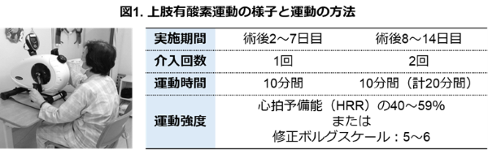
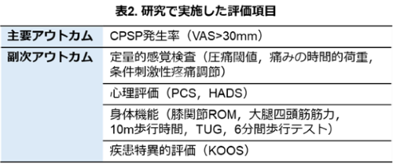
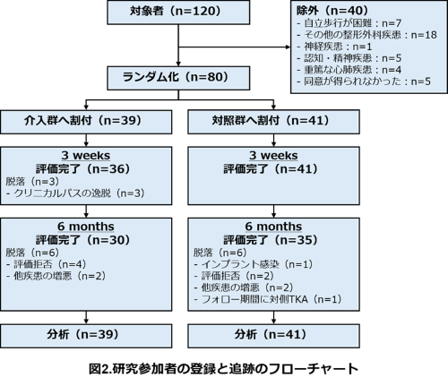

人工膝関節全置換術（TKA）は，変形性膝関節症に対する有効な治療法ですが，一部の患者さんでは術後も長期間にわたり痛みが持続することがあります．このような慢性術後疼痛の発生には，術後早期における痛みが強いことが関与するとされています．一方，有酸素運動には痛みを軽減する効果があることが報告されていますが，TKA後の通常リハビリテーション（リハ）プログラムに上肢による有酸素運動を追加することで，慢性術後疼痛の発生を予防できるか否かをランダム化比較試験により検証しました．
本研究では，TKA術後の慢性術後疼痛の発生率は両群とも約2%であり，従来報告されている発生率と比べて低い値でした．その要因として，実施した通常リハプログラムや他の痛みの管理が良好であったため，上肢有酸素運動を追加しても十分な効果を示す結果にならなかったのではないかと考えられます．そのため，上肢有酸素運動の追加効果は明確ではなく，今後はより運動条件を変更するなど詳細な検討が必要です．
＜方法＞
変形性膝関節症に対してTKAを受けた80例を，通常リハプログラムを行う対照群と通常リハプログラムに上肢有酸素運動を追加する介入群に無作為に振り分けました．上肢有酸素運動は，術後2日目から14日目まで上肢エルゴメータを用いて実施しました（図1）．

評価項目として，主要アウトカムはTKA術後6か月時点の慢性術後疼痛の発生率としました．また，副次アウトカムは，表2に示す項目について，術前，術後3週間，術後6か月で評価しました．

＜結果＞
80例の参加者がランダム化され，介入群39例，対照群41例に割り付けられました．伊津部の参加者で途中離脱や追跡不能例が認められましたが，その主な理由は研究参加や痛みの増悪に起因するものではありませんでした（図2）．
主要アウトカムである慢性術後疼痛の発生率は，対照群2.4%，介入群2.6%でした．統計学的解析の結果，両群間に有意差は認められず，上肢有酸素運動を追加したリハプログラムによる慢性術後疼痛の発生予防は明らかではありませんでした（リスク差0.1%，95%信頼区間 －12.1%～12.8%）．また，すべての副次アウトカムについても2群間に有意差は認められませんでした．

本研究では，TKA術後の慢性術後疼痛の発生率が非常に低く，上肢有酸素運動を追加したリハプログラムの効果については明らかではありませんでした．このような結果が得られた要因は複数考えられますが，その一つに今回実施した通常プログラムや他の痛みの管理が痛み軽減に著効したことが影響している可能性が考えられます．本研究の成果は，慢性疼痛の発生予防に有効な術後リハプログラムの確立につながる基礎的知見になることが期待されます．．